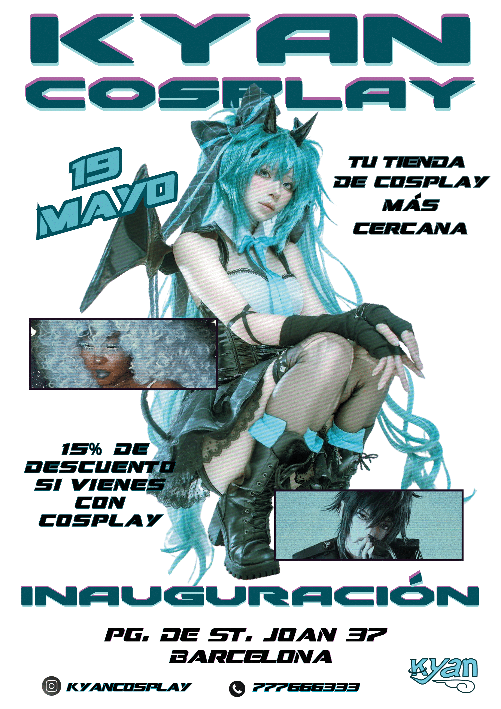
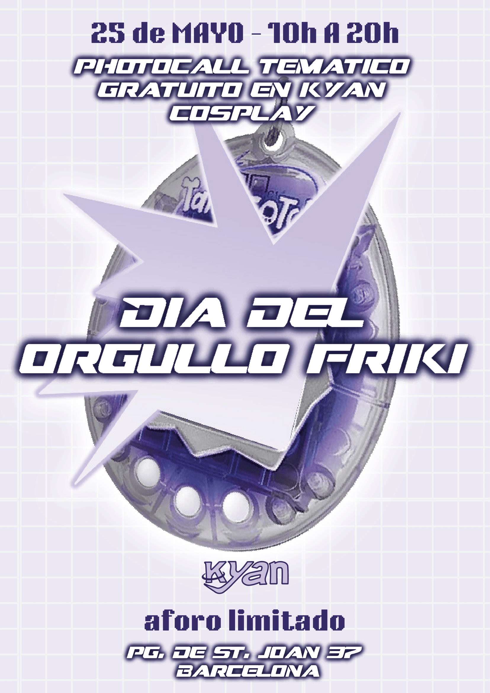
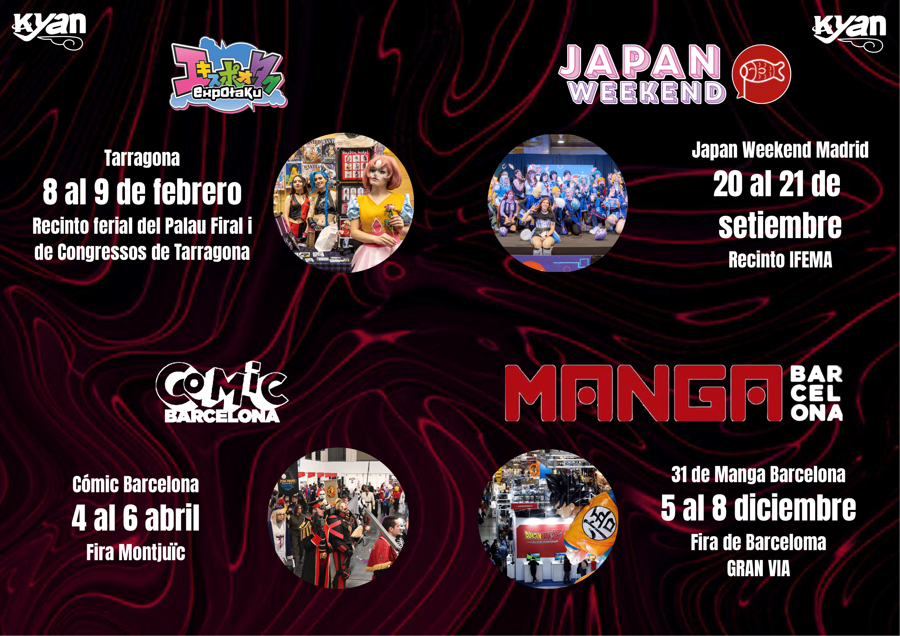
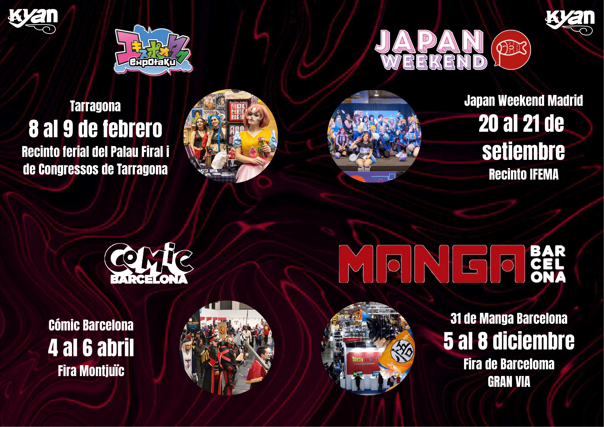
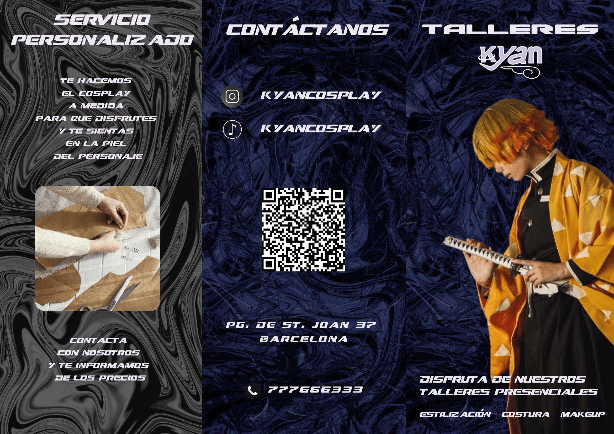
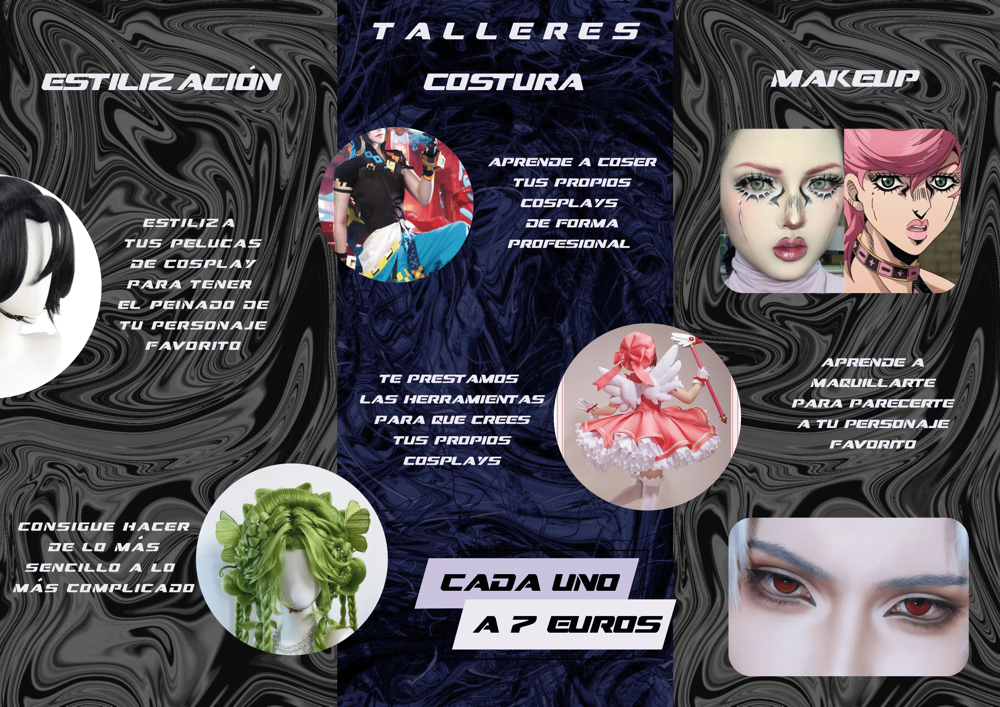

Kyan Cosplay
Kyan Cosplay es un proyecto de creación de empresa desde cero, enfocado en el mundo del cosplay. Creamos la identidad de la empresa, incluyendo logo, valores, público objetivo y materiales de marketing como posters, dípticos y trípticos.
Formación en Marketing
Durante este proyecto, desarrollamos diversos materiales gráficos y documentación para la empresa, aplicando conocimientos de marketing y diseño visual:

Poster 1

Poster 2
 

Díptico


Tríptico
Documentación del Proyecto en PDF
Puedes visualizar la documentación a continuación:
Briefing Kyan
Ver BriefingStory Telling
Ver Story TellingPágina Web del Proyecto
Además de los materiales gráficos y documentación, desarrollamos una página web para Kyan Cosplay. Aunque aún no está completamente terminada (por falta de tiempo en la formación), permite explorar el concepto de la empresa y algunos productos.
Visitar Página Web